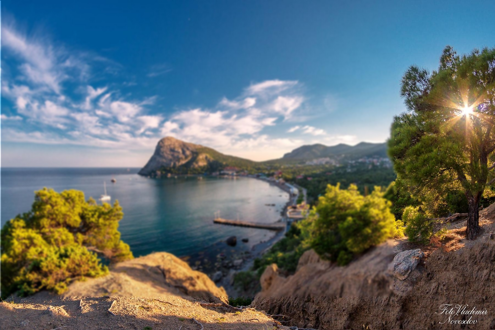
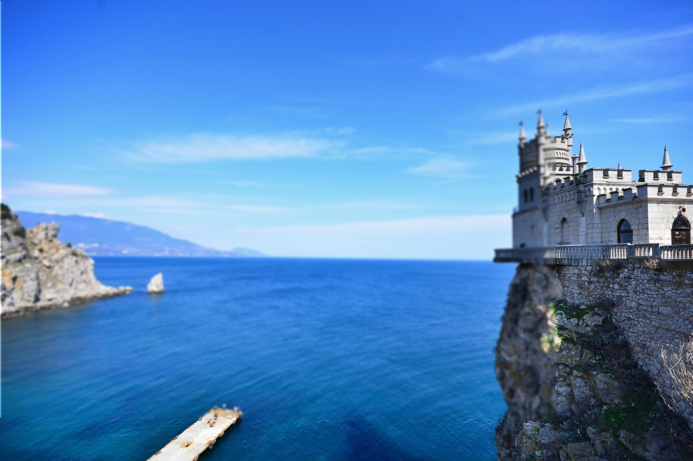

Начиная с I тысячелетия до н. э. Крымский полуостров населяли племена тавров и киммерийцев, которых затем сменили скифы. В VI веке до н. э. на побережье появились первые колонии греков. В течение I тысячелетия н. э. разные части полуострова оказывались под влиянием Рима, Скифского государства, германских племен, Византии, Хазарского каганата. В Х веке Крым попал в сферу интересов Киевской Руси. Восточная его часть вошла в Тмутараканское княжество. В 988 году киевский князь Владимир захватил Херсонес. В Х–ХI веках Крым был завоеван печенегами, затем половцами. В XII веке здесь появились венецианцы, которых вскоре вытеснили генуэзцы. В 1239 году степной Крым завоеван монголами и включен в состав Золотой Орды. В 1441 году на полуострове образовалось независимое Крымское ханство. В 1475 году Османская империя завоевала генуэзские владения, ханство стало ее протекторатом. В результате Русско-турецкой войны 1768–1774 годов ханство перешло под протекторат Российской империи. В 1783 году Крым присоединен к России, в том же году заложен Севастополь и основан Черноморский флот. Новые земли стали частью Таврической области, а затем — губернии. Полуостров был основной ареной боев в ходе Крымской войны 1853–1856 годов. В 1917–1920 годах во время гражданской войны в Крыму несколько раз менялись белые и красные правительства. В 1918 году полуостров находился под германской оккупацией. В 1921 году он вошел в состав РСФСР как автономная республика.
В 1941–1944 годах Крым был оккупирован Третьим рейхом. В 1944 году власти СССР провели депортацию более 183 тыс. крымских татар (их возвращение началось лишь в 1989-м). В 1946–1954 годах входил в состав РСФСР как Крымская область. 19 февраля 1954 года указом президиума Верховного совета СССР область передана Украинской ССР. В документе не оговаривалась передача Севастополя — города республиканского подчинения РСФСР. В Конституции УССР 1978 года город был указан уже как часть Украины.
12 февраля 1991 года по итогам референдума область преобразована в Крымскую АССР в составе УССР. Конституция 1992 года дала Крыму широкую автономию и пост президента. В 1994 году президентом стал Юрий Мешков, предлагавший передать Крым под юрисдикцию РФ. В 1995 году Верховная рада Украины упразднила пост президента Крыма и его конституцию. В 1997 году Москва и Киев договорились о разделе Черноморского флота и его базировании в Севастополе до 2017 года. В 2010 году договор был продлен еще на 25 лет.